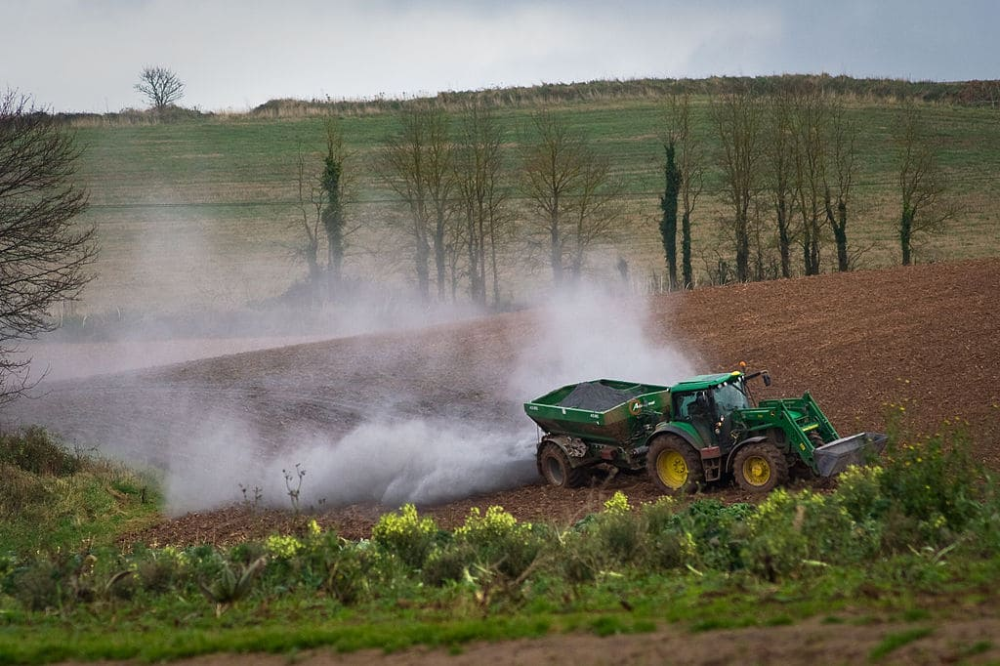
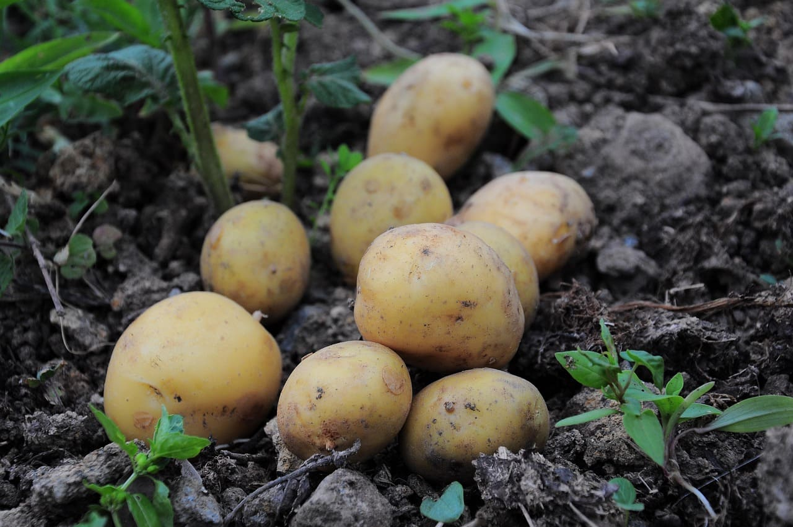

Recommendations & Discussion

Image credit: Mark Robinson, Wikimedia Commons (Creative Commons)
1. Leaf Burning Alternatives
- Mechanical Defoliation: Defoliation machines can be used to remove infected foliage1.
- Antagonistic Microorganisms: Certain strains of bacteria and fungi, can suppress the growth of the late blight pathogen in potatoes2.
- Compost Extracts: Applying compost extracts to foliage has been shown to enhance the plant's natural defence mechanisms2.
- Biofumigation: Specific crops, like mustard, release natural compounds that suppress soil-borne pathogens3.
Image credit: Werktuigendagen Oudenaarde, Wikimedia Commons (Creative Commons)
2. Costs and Labour
- Higher Labour Requirements: Manual weeding and mechanical pest control increase labour demand in organic systems4.
- Increased Production Costs: Labour, lower yields, and more management complexity contribute to higher production costs in organic systems5.
- Market Price Premiums: Organic products can command significantly higher market prices, offsetting costs5.
- Economic Viability: The profitability of organic farming depends on maintaining yield stability and accessing organic price premiums5.

Image credit: Orhan Can, Pixabay (Creative Commons)
3. Soil Biodiversity
- Enhanced Soil Microbial Diversity: Organic farming practices like crop rotation increase soil microbial diversity, which is crucial for effective nutrient cycling and overall soil health6.
- Improved Soil Structure and Water Retention: Organic farming enhances soil structure, leading to better water infiltration and retention, which is vital for plant growth and drought resistance13.
- Promotion of Beneficial Soil Fauna: Organic systems support a higher abundance of earthworms and other beneficial soil fauna, which contribute to nutrient cycling and soil aeration7.
- Reduced Soil Erosion: The improved soil structure under organic farmic contributes to reduced soil erosion, preserving topsoil and maintaining long-term soil fertility8.
Image credit: Balazs Simon, Pexels (Creative Commons)
4. Human Health
- Increased Risk of Parkinson's Disease: Repeated exposure to certain pesticides used in intensive farming is associated with a higher risk of developing Parkinson's disease9.
- Neurotoxic Effects of Pesticides: Certain pesticides have been found to induce neurological disorders among agricultural workers10.
- Reduced Chemical Residues in Food: Organic farming standards prohibit the use of synthetic pesticides and fertilisers, resulting in lower pesticide residues in food11.
- Potential Long-Term Health Benefits: Consuming organic foods may contribute to a lower risk of chronic diseases due to reduced exposure to pesticide residues and potentially higher levels of certain nutrients12.
References
- Berindean, I. V., Taoutaou, A., Rida, S., Ona, A. D., Stefan, M. F., Costin, A., Racz, I., & Muntean, L. (2024). Modern Breeding Strategies and Tools for Durable Late Blight Resistance in Potato. Plants (Basel, Switzerland), 13(12), 1711. https://doi.org/10.3390/plants13121711
- Ghorbani, R., Wilcockson, S. & Leifert, C. Alternative treatments for late blight control in organic potato: Antagonistic micro-organisms and compost extracts for activity against Phytophthora infestans . Potato Res. 48, 181-189 (2005). https://doi.org/10.1007/BF02742375
- Baysal-Gurel, F., Liyanapathiranage, P., & Addesso, K. M. (2019). Effect of Brassica crop-based biofumigation on soilborne disease suppression in woody ornamentals. Canadian Journal of Plant Pathology, 42(1), 94-106. https://doi.org/10.1080/07060661.2019.1625444
- Seufert, V., Ramankutty, N., & Foley, J. A. (2012). Comparing the yields of organic and conventional agriculture. Nature, 485(7397), 229-232. https://doi.org/10.1038/nature11069
- Crowder, D. W., & Reganold, J. P. (2015). Financial competitiveness of organic agriculture on a global scale. PNAS, 112(24), 7611-7616. https://doi.org/10.1073/pnas.1423674112
- Lori, M., Symnaczik, S., Mäder, P., et al. (2017). Organic farming enhances soil microbial abundance and activity—A meta-analysis and meta-regression. PLOS ONE, 12(7), e0180442. https://doi.org/10.1371/journal.pone.0180442
- van Groenigen, J. W., Lubbers, I. M., Vos, H. M. J., et al. (2014). Earthworms increase plant production: a meta-analysis. Scientific Reports, 4, 6365. https://doi.org/10.1038/srep06365
- Lotter, D. W., Seidel, R., & Liebhardt, W. (2003). The performance of organic and conventional cropping systems in an extreme climate year. American Journal of Alternative Agriculture, 18(3), 146-154. https://doi.org/10.1079/AJAA200345
- Pezzoli, G., & Cereda, E. (2013). Exposure to pesticides or solvents and risk of Parkinson disease. Neurology, 80(22), 2035-2041. https://doi.org/10.1212/WNL.0b013e318294b3c8
- Baltazar, M. T., Dinis-Oliveira, R. J., de Lourdes Bastos, M., et al. (2014). Pesticides exposure as etiological factors of Parkinson's disease and other neurodegenerative diseases—A mechanistic approach. Toxicology Letters, 230(2), 85-103. https://doi.org/10.1016/j.toxlet.2014.01.039
- Smith-Spangler, C., Brandeau, M. L., Hunter, G. E., et al. (2012). Are organic foods safer or healthier than conventional alternatives? A systematic review. Annals of Internal Medicine, 157(5), 348-366. https://doi.org/10.7326/0003-4819-157-5-201209040-00007
- Baranski, M., Srednicka-Tober, D., Volakakis, N., et al. (2014). Higher antioxidant and lower cadmium concentrations and lower incidence of pesticide residues in organically grown crops: a systematic literature review and meta-analyses. British Journal of Nutrition, 112(5), 794-811. https://doi.org/10.1017/S0007114514001366
- Reganold, J. P., & Wachter, J. M. (2016). Organic agriculture in the twenty-first century. PNAS, 113(3), 761-768. https://doi.org/10.1073/pnas.1423674112
Home
Introduction
Comparison
Insights
About Us
A